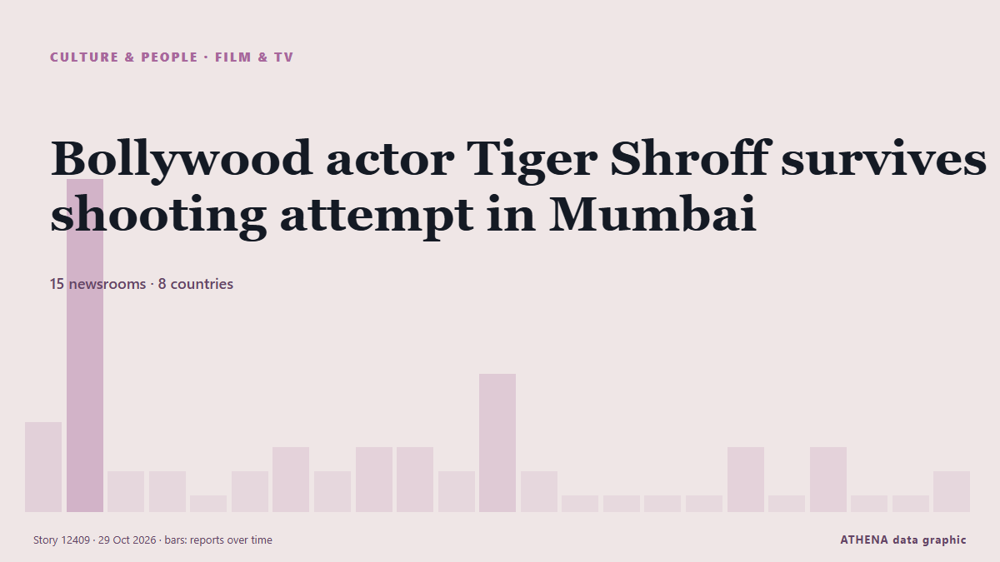

Культура и людиТитульная карточка. 15 СМИ в 8 странах Освещение: сообщений за 12 ч
Bollywood actor Tiger Shroff survives shooting attempt in Mumbai

Videos showed gunmen firing shots at Shroff's car while it was moving slowly past a crowd. из BBC News
Коротко
Независимые источники: 15 изданий в 8 странах, с 18 окт.; первым сообщил Khaama Press; освещение идёт на спад. Спорт и культура публикуются без оценки риска. Уверенность — 84 % (высокая); подтверждают независимые источники: 15 изданий, средняя надёжность источников — 72 %. СМИ по странам: Индия (17), Афганистан (3), ОАЭ (2). Освещение: с 18 окт. по 29 окт., 266 ч.
Что изменилось: 1 новое сообщение за 24 часа до 29 окт..
Заголовки приводятся на английском языке, как они были опубликованы.
Коротко в цифрах
5.7Значимость
—Без оценки риска
84%Уверенность
Отобрано, оценено и написано по опубликованной методологии ATHENA. Ни один редактор не вмешивается в отдельные события. Как это создаётся ›
| 18 Oct 18:20 UTC | 3 |
|---|---|
| 19 Oct 06:20 UTC | 13 |
| 19 Oct 18:20 UTC | 1 |
| 20 Oct 06:20 UTC | 1 |
| 20 Oct 18:20 UTC | 0 |
| 21 Oct 06:20 UTC | 1 |
| 21 Oct 18:20 UTC | 2 |
| 22 Oct 06:20 UTC | 1 |
| 22 Oct 18:20 UTC | 2 |
| 23 Oct 06:20 UTC | 1 |
| 23 Oct 18:20 UTC | 0 |
| 24 Oct 06:20 UTC | 2 |
| 24 Oct 18:20 UTC | 0 |
| 25 Oct 06:20 UTC | 0 |
| 25 Oct 18:20 UTC | 0 |
| 26 Oct 06:20 UTC | 0 |
| 26 Oct 18:20 UTC | 0 |
| 27 Oct 06:20 UTC | 1 |
| 27 Oct 18:20 UTC | 0 |
| 28 Oct 06:20 UTC | 0 |
| 28 Oct 18:20 UTC | 0 |
| 29 Oct 06:20 UTC | 0 |
| 29 Oct 18:20 UTC | 1 |
Откуда эти цифры
Значимость
Охват — страны, где об этом пишут
Широта — разные издания
Новизна
Пересечение рубрик
Разнообразие — регионы и типы СМИ
Риск
—
Уверенность
Независимые издания
Надёжность источников
Страны
Стабильность
Согласованность классификации
Освещение — кто сообщил и когда
заголовок в оригинале · открывает источник- Khaama Press · АфганистанVideo Shows Gunmen Opening Fire at Actor Tiger Shroff
- The National · ОАЭWho is Tiger Shroff and what do we know about the shooting of the Bollywood star?
- Khaama Press · АфганистанTiger Shroff’s Estimated $26 Million Fortune Draws Attention After Mumbai Shooting
- Express Tribune · ПакистанTiger Shroff's car targeted in Mumbai shooting, three arrested
- BBC News · ВеликобританияBollywood actor Tiger Shroff survives shooting attempt in Mumbai
- Indian Express · Индия‘200 brothers ready in Mumbai’: Gangster Anil Pandit after Tiger Shroff firing
- Indian Express · ИндияTiger Shroff shooting reveals a shift in Mumbai’s underworld gunmen: The outsiders
- Business Recorder · ПакистанBollywood actor Tiger Shroff shot at in Mumbai, three suspects held: police
- Asharq Al-Awsat (English) · Саудовская АравияBollywood Actor Tiger Shroff Shot at in Mumbai, Three Suspects Held
- Scroll.in · ИндияTiger Shroff shot at in Mumbai, three suspects held
- Hindustan Times · Индия‘We thought worst was behind us’: Shroff attack sends shockwaves through Bollywood
- NDTV · ИндияTiger Shroff Firing Case Updates: 3 Suspects Undergo Medical Examination In Kota, Transit Remand Granted
- NDTV · ИндияTiger Shroff Was Shot At In Mumbai. Hours Later, Suspects Spotted In Surat
- Indian Express · ИндияTiger Shroff attack: Shooters fired 5 rounds before gun jammed, says Mumbai Police
- NDTV · ИндияHow Mumbai Cops Tracked Down 3 Men Who Fired At Tiger Shroff Within 24 Hours
- The Kathmandu Post · НепалThree detained over shooting at Bollywood actor Tiger Shroff’s car
- Indian Express · ИндияMumbai police team taking Tiger Shroff shooting accused turns back over fears of being followed
- Khaama Press · АфганистанSalman Khan’s Security Tightened After Shooting at Tiger Shroff’s Car
- Scroll.in · ИндияAttack on Tiger Shroff: Five more arrested, being brought to Mumbai
- NDTV · Индия'Let's Visit Mumbai Temple': How Tiger Shroff Shooting Accused Was Tricked
- Times of India · ИндияTiger Shroff firing: Accused practised shooting near Mumbai, bullet hit hotel bed
- Gulf News · ОАЭTiger Shroff firing case: Gun misfires as accused practice shooting before attack
- BBC News · ВеликобританияAttack on actor Tiger Shroff is dark reminder of Bollywood's gangster past
- MyJoyOnline · ГанаAttack on actor Tiger Shroff is dark reminder of Bollywood’s gangster past
- Indian Express · ИндияTiger Shroff shooting: 3 arrested sent to police custody till Oct 28
- Indian Express · ИндияTiger Shroff sells Mumbai apartment for Rs 9 crore days after firing incident
- The Hindu · ИндияTiger Shroff firing case: Two firearms, 10 live cartridges recovered from Surat; suspect detained in Indore
- Indian Express · ИндияTiger Shroff firing: Why the 11 accused are unlikely to get bail soon
- Indian Express · ИндияTiger Shroff firing case: Mumbai Police detain labourer from Sonipat, probe links with accused